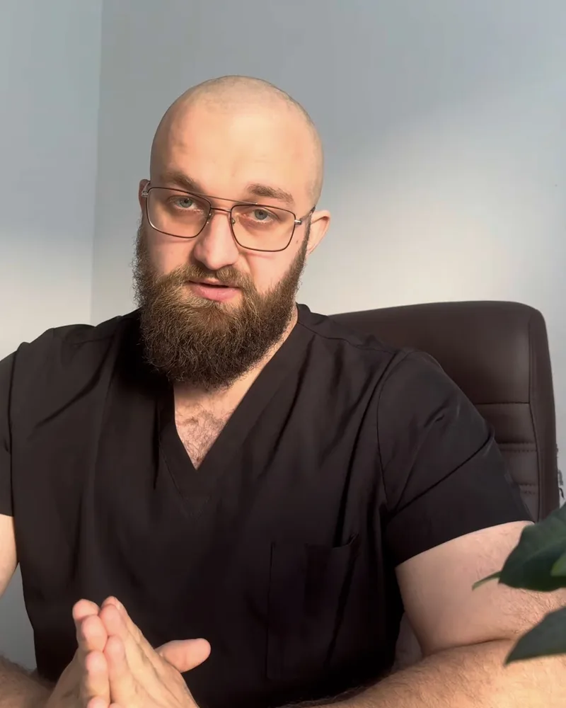

Крапельниці та детоксикація в Черкасах
Комплексна допомога при залежностях: детоксикація, IV-терапія та відновлення. Анонімно, без постановки на облік.
- 💧 Детоксикація
- 💉 IV-терапія
- 🔒 Анонімно
- 🕐 24/7
Послуги
Виведення із запою
Крапельниця, стабілізація тиску й серцевого ритму, контроль стану лікарем.
Детальніше →Крапельниця від похмілля
Відновлення водно-сольового балансу та самопочуття за 1–2 години.
Детальніше →Виїзд лікаря додому
Лікар приїде з усім необхідним. Анонімно, цілодобово, по всіх районах Черкас.
Детальніше →
[Ім'я та прізвище лікаря]
[Спеціальність] · стаж [N] років
[Кілька речень про лікаря: освіта, досвід, підхід до пацієнтів і рідних.]
- Оглядає перед кожною процедурою
- Підбирає склад крапельниці індивідуально
- Консультує рідних, як підтримати людину далі
Як ми працюємо
- Ви пишете або телефонуєте. Можна не називати імені. Лікар коротко розпитає про стан.
- Огляд лікаря. Тиск, пульс, сатурація, протипоказання. Склад крапельниці підбирається індивідуально.
- Процедура. Крапельниця під наглядом лікаря, зазвичай 1–2 години.
- Рекомендації та підтримка. Що робити далі, щоб стан не повторився: консультація, відновлення, психологічна підтримка.
- судоми, втрата свідомості;
- галюцинації, сплутаність свідомості;
- біль у грудях, задишка;
- блювання з кров'ю.
Часті питання
Чи справді все анонімно?
Так. Ми не ставимо на облік і не передаємо дані третім особам. Для звернення достатньо імені, яке ви самі оберете.
Чи вилікує крапельниця залежність?
Ні. Крапельниця знімає гострі наслідки інтоксикації. Щоб стан не повторювався, потрібна подальша робота: консультації, відновлення, психологічна підтримка. Ми допоможемо скласти план.
Скільки триває процедура?
Зазвичай 1–2 години, залежно від стану та складу крапельниці.